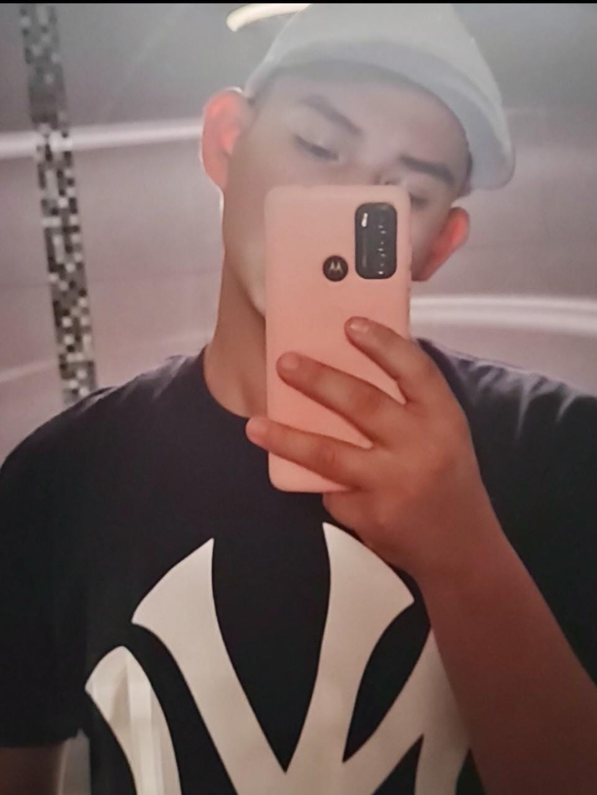
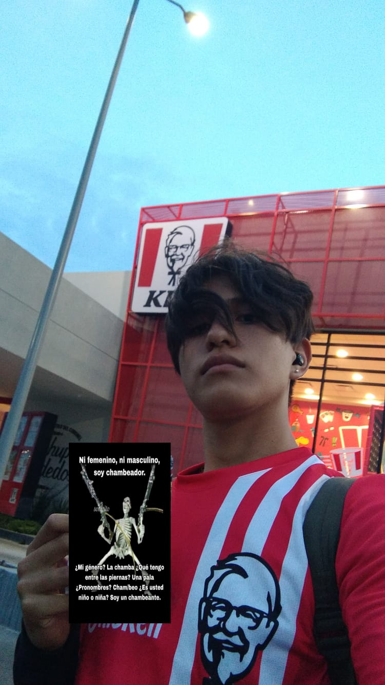

| Mis Compañeros | |
|---|---|
Carranza Zuñiga AdolfoVeo que es un compañero responsable, buena persona y que se preocupa por sus amigos, un poco enojón pero me cae bien al final de cuentas. |
|
|  | Escobar Blanco Josue AlexanderEs un compañero regular. No tengo problemas con el de ningun tipo, solo no es la persona indicada con la que me llevaría, solo presiento que deberia prestar mas atención a la escuela. |
Estrada Montelongo EmmanuelNo se quién es, no lo conozco en absoluto y no lo veo de otra forma mas que un compañero de clase más. |
|
Flores Santos Diego AlessandroNo lo conozco, nada memorable, un compañero de clase más y ya. |
|
Gomez Andrade Pedro PabloBuen compañero, me cae muy bien y me parece buena onda al fin y al cabo, solo quisiera verlo más enfocado en la escuela también. |
|
Gonzalez Flores Tadeo ArielLo veo bien, me parece algo gracioso a veces y me agrada su dedicación a la programación y aprender en general, me agrada mucho. |
|
Guardian Jimenez Esbeidy EdithLa veo normal, una compañra mas, no la conozco a fondo y no tengo mucho interés en hacerlo, pero se ve amable y que podría ser carismatica. |
|
Hernandez Garcia Luis FernandoNo lo conozco mucho en realidad, a veces es un poco ruidoso, pero de un par de veces que interactuamos se ve como una buena persona y me agradó un poco. |
|
Lona Servin Pablo AlejandroNo lo conozco en lo absoluto, ni siquiera lo reconozco, un compañro de clase más. |
|
Lopez Almaguer Luis AntonioMe cae muy bien, de los que considero un poco más que solo un compañro de clase, a veces un poco pesado, pero me parece gracioso al final del día, me agrada. |
|
|  | Macias Gomez Juan JoseLo veo muy callado, un compañero con el que quisiera hablar más y conocer, pero que siento que cierra a socializar conmigo o nadie más, pero me parece buena onda cuando hemos hablado. |
Mena Santoyo Alondra de la CruzNo la conozco bien, se ve buena persona y no tengo intención de conocerla, se ve agradable y no cuento con opinión. |
|
Mendoza Carmona JonathanNo lo conozco muy bien, seve muy callado pero que es responsable y se enfoca en sus asuntos, lo respeto y me parece que es alguien tranquilo. |
|
Monjaraz Andrade Joseline AlexaMe agrada, se ve divertida y confiable, no hablamos mucho pero cuando lo hacemos me agrada la vibra. |
|
Monjaraz Quiroz EdithMe agrada, no me parece muy increíble, pero tampoco la odio, me agradó cuando hicimos equipo una vez, pero ojalá se expresara un poco más |
|
Moñoz Osorio Ingrid AlexaLa veo normal, una compañra mas, no la conozco a fondo y no tengo mucho interés en hacerlo, pero se ve amable y que podría ser carismatica. |
|
Nasta Rueda Daniel AbrahammDefinitivamente mi persona favorita en el salón, me agrada mucho. Ha sido muy buen amigo para mí y lo aprecio mucho de verdad. |
|
Padilla Balderas Christian OmarNo tengo idea, y no lo conozco en absoluto, compañero de salón y ya. |
|
Ramos Hernandez Jazmin EstephanieMe cae muy bien, se ve que es muy responsable y dedicada, la admiro por ser tan linda con los demás y ser buena onda. |
|
Resendiz Rios Cesar EduardoNo lo conozco bien, se ve un poco ruidoso, quizas responsable, no tengo idea clara, pero no se ve mala persona. |
|
Rostro Saavedra Kevin ArmandoRelativamente nuevo en nuestra clase entonces no lo conozco muy bien, se ve muy sociable y que le gusta interactuar con los demás, se ve buena onda, pero probablemente no con quien yo me relacionaria. |
|
Ruiz Texna Irving AlbertoEs un poco raro, será por la edad, lo veo solo buscando por atención, en general me da igual. |
|
Saucedo Gutierrez Dulce MariaMe cae bien, se ve que puede ser responsable si se enfoca, me agrada su actitud positiva y humor. |
|
Solano Garcia Ivana PaolaNo la conozco bien, en general está en la orilla de mi mirada porque su cabello me llama la atención, se ve un poco carismatica, pero es todo. |
|
Vaca Juarez Paola GuadalupeNo la conozco bien, no interés en general, ahí anda nada más existiendo, con mucha confianza en sí misma, creo. |
|
Valtierra Medina Arely ArianaMe cae bien, divertida y agradable. |
|
Zamora Rocha Luis AngelSoy yo,todo chiquito, todo wey. |